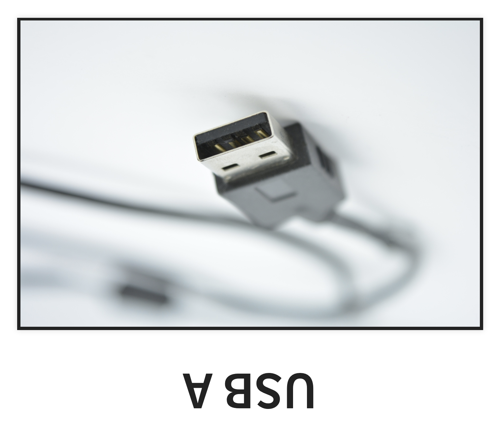
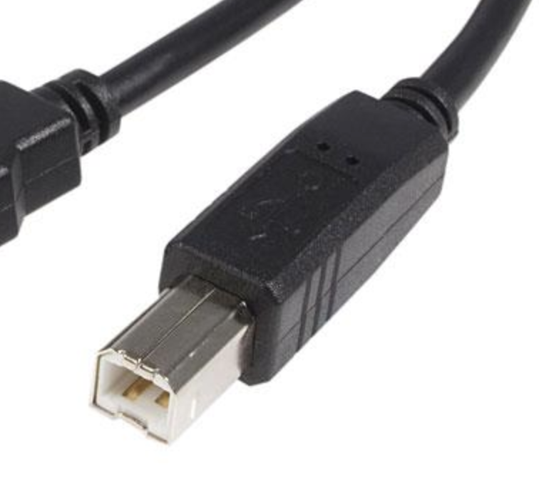
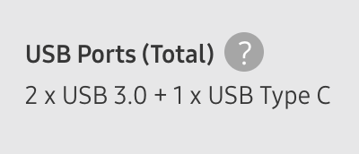

Understanding USB
Why this cable works, and that one doesn't
Henry Marshall
2019-03-11
USB Spec
Not Just 1 Spec
- Ports
- Data
- Charging
Ports

USB A
USB B

USB C

Micro USB

Data
| Version | Marketing Name |
|---|---|
| USB 2.0 | High Speed (480 Mbit/s) |
| USB 3.0 | SuperSpeed (5Gbit/s) |
| USB 3.1 | SuperSpeed+ (10 Gbit/s) |
| USB 3.2 | SuperSpeed+ (20 Gbit/s) |
| USB4 (upcoming) | SuperSpeed+ (40 Gbit/s) |
| Thunderbolt 3 | |
| DisplayPort |
| Version | 2013-01 | 2017-07 |
|---|---|---|
| USB 2.0 | ||
| USB 3.0 | USB 3.1 Gen 1 | USB 3.2 Gen 1 |
| USB 3.1 | USB 3.1 Gen 2 | USB 3.2 Gen 2 |
| USB 3.2 | USB 3.2 Gen 2x2 | |
| USB4 (upcoming) | ||
| Thunderbolt 3 | ||
| DisplayPort |
Where the Trouble Starts
Ports
| Version | A | B | C | Micro |
|---|---|---|---|---|
| USB 2.0 | ✅ | ✅ | ✅ | ✅ |
| USB 3.0 | ✅ | ✅ | ✅ | ✅ |
| USB 3.1 | ✅ | ✅ | ✅ | ✅ |
| USB 3.2 | ❌ | ❌ | ✅ | ❌ |
| USB4 (upcoming) | ❌ | ❌ | ✅ | ❌ |
| Thunderbolt3 (TB3) | ❌ | ❌ | ✅ | ❌ |
| DisplayPort (DP) | ❌ | ❌ | ✅ | ❌ |
USB A 3.x is Blue
USB B 3.x

Micro USB 3.x

USB C ???

Thunderbolt 3
Ports
| Version | A | B | C | Micro |
|---|---|---|---|---|
| USB 2.0 | Black | Small | ??? | Small |
| USB 3.0 | Blue | Big | ??? | Big |
| USB 3.1 | Blue | Big | ??? | Big |
| USB 3.2 | x | x | ??? | x |
| USB4 (upcoming) | x | x | ??? | x |
| Thunderbolt3 (TB3) | x | x | Bolt | x |
| DisplayPort (DP) | x | x | ??? | x |
Graceful Degradation
Lowest Common Denominator
- Host
- Peripheral
- Cable
Why Protocols Matter
Speed
Alt Mode DP Monitors
External GPU
Charging
Watt = Volt * Amp
10W = 5V * 2A
| Open Standard | Maximum Power |
|---|---|
| USB 2.0 | 2.5W = 5V at 0.5A |
| USB 3.0 | 4.5W = 5V at 0.9A |
| Battery Charging v1.2 | 25W = 5V at 5A (Typical 2A) |
| Power Delivery (PD) | 100W = 5/9/15/20V at 5A |
| Proprietary Standard | Maximum Power |
|---|---|
| Quick Charge 1.0 | 10W = 5V at 2A |
| Quick Charge 2.0 | 18W = 5/9/12V at 3A |
| Quick Charge 3.0 | 18W = 3.6-20V at 2.5/4.6A |
| Quick Charge 4.0+ | QC 3 & 27W PD (9V at 3A) |
| Samsung AFC | 18W = 5/9V at 1.67/2A |
| One Plus WC 30 | 30W = 5V at 6A |
| Huawei SC 2.0 | 40W = 5/9/10V at 2/4A |
| Oppo VOOC 2 | 50W = 5V at 10A |
Lowest Common Denominator
- Charger
- Device
- Cable
Maximizing your Speed
Power Meter
Batteries
Wireless Charging
Assets
- USB A 2.0
USB B 2.0 by Edwin Javier Nuñez
USB A 2.0: Vahid alpha at English Wikipedia
- USB A 3.x: Rainer Knäpper, Free Art License
- Micro USB 3.0: Rainer Knäpper, Free Art License
- USB B 3.0: Anıl Öztaş
- USB C: Max Pixel
- USB C with Laptop: Maurizio Pesce
- Thunderbolt 3: Amin on Wikimedia
{kind=link}
{kind=link}
{kind=link}
{kind=link}